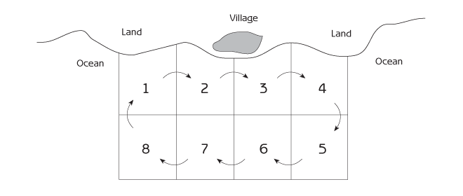
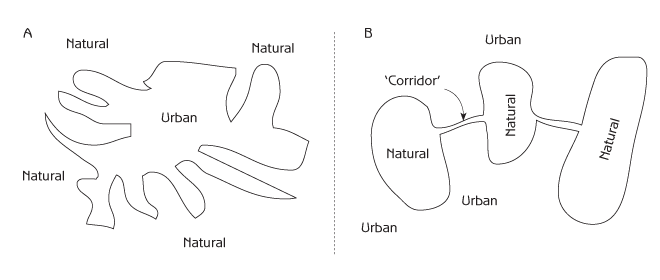
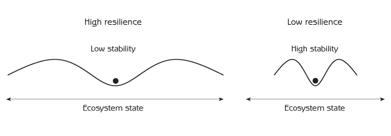

Human Ecology
Basic Concepts for Sustainable Development
Author: Gerald G. Marten
Publisher: Earthscan Publications
Publication Date: November 2001, 256 pp.
Paperback ISBN: 1853837148
Hardback SBN: 185383713X
Chapter 11 Sustainable Human - Ecosystem Interaction
- Human social institutions and sustainable use of common property resources
- Coexistence of urban ecosystems with nature
- Resilience and sustainable development
- Adaptive development
- Things to think about
How can modern society embark on a course of ecologically sustainable development? Firstly, and most importantly, do not damage ecosystems.
- Do not damage ecosystems to such an extent that they lose their ability to provide essential services.
- Watch carefully for environmental or social side effects when using new technologies.
- Do not overexploit fisheries, forests, watersheds, farm soils or other parts of ecosystems that provide essential renewable resources. Increase the use of renewable natural resources gradually, monitoring for damage to the resource.
- Develop social institutions to protect common property resources from tragedy of the commons.
- Follow the precautionary principle when using natural resources, disposing of wastes or interacting with ecosystems in any way.
Secondly, do things nature’s way so that nature does as much of the work as possible.
- Take advantage of nature’s self-organizing abilities, thereby reducing the human inputs needed to organize ecosystems.
- Develop technologies that have low inputs because they are designed to let nature do the work.
- Take advantage of natural positive and negative feedback loops instead of struggling against them.
- Take advantage of natural cycles that use waste from one part of the ecosystem as a resource for another part of the ecosystem.
- Organize agricultural and urban ecosystems to mimic natural strategies. For example, organize agriculture ecosystems as polycultures that resemble natural ecosystems in the same climatic region. Recycle manufactured goods in a ‘technical cycle’ that keeps the wastes from manufactured goods separate from biological cycles in the ecosystem.
How can sustainable development be achieved in practice? This chapter starts with an important example - social institutions to prevent tragedy of the commons. It then examines the issue of coexistence of urban ecosystems with nature. The chapter concludes by exploring two essential and interrelated aspects of sustainable development:
- Resilience - the ability of social systems and ecosystems to continue functioning despite severe and unexpected stresses.
- Adaptive development - the ability of social systems to cope with change.
Resilience and adaptive development are important because ecologically sustainable development is not simply a matter of harmonious equilibrium with the environment. Preventing damage to ecosystems is absolutely essential for sustainable development, but it is not enough. Human society is constantly changing, and so is the environment. Sustainable development requires a capacity to deal with change. Resilience and adaptive development are the key to attaining that capacity.
Human Social Institutions and Sustainable Use of Common Property Resources
How can we prevent tragedy of the commons? Where existing social institutions encourage tragedy of the commons by making the overexploitation of common property resources a rational choice for individuals, we need new institutions that make sustainable use the rational choice. Scientists have compared hundreds of societies around the world to discover what social institutions are associated with the sustainable use of resources, such as forests, fisheries, irrigation water and communal pastures. They have discovered that some societies are highly successful at preventing tragedy of the commons. While details are different in each instance, the successful cases all have the following themes in common.
- Clear ownership and boundaries: group ownership of a clearly defined area provides the control that is necessary to prevent overexploitation. This is closed access. Territoriality is a common social institution that people use to define ownership and boundaries. Extended maritime jurisdictions that nations have declared for ownership of marine natural resources within 320 kilometres of their shores are modern examples of closed access for common property resources.
- Commitment to the sustainable use of the resource: the owners of a common property resource must really want to use it on a sustainable basis. They must agree that:
- individual use is damaging the resource;
- cooperative use of the resource will reduce the risks of damage;
- the future is important (ie, opportunities for their children and grandchildren are as important as their own short-term gains).
It is best if the owners have a shared past, trust each other, expect a shared future and value their reputation in the community. It is easier if ethnic differences or economic status are not sources of conflict for the resource owners.
- Agreement about rules for using the resource: everyone should have enough knowledge about the resource in order to understand the consequences of using it in different ways. Good rules require not only a thorough knowledge of the resource itself but also a knowledge of the behaviour of the people who are using it. Good rules are simple, so everyone knows what is expected, and good rules are fair. No one likes to sacrifice for the selfish gain of others. Good rules produce benefits that exceed the costs of cooperation, costs that include organizational overhead, the effort or expense necessary to make a group function. Good rules don’t waste people’s time or other valued resources.
- Internal adaptive mechanisms: sooner or later, it is necessary to adapt the rules for using a common property resource because of changes in the social system or the ecosystem, changes that often originate from the ‘outside world’. The mechanisms for adapting rules should be simple and inexpensive. Changes should usually be incremental so that large mistakes are avoided. It is important to monitor carefully what happens after new rules are put into effect, so the group can decide whether to make further changes. Trial-and-error evolution of rules is an example of self-organization in the social system.
- Enforcement of rules: people usually follow rules if they think that everyone else is following the rules too. The best way to prevent people from breaking the rules is by internal monitoring - resource users watch each other - supplemented by external monitoring, such as guards. Everyone must know that everyone else will know if he or she break the rules. Severe punishments are not necessary if infractions are likely to be detected. Social pressure and the embarrassment of being caught are sufficient deterrents. Punishments should be minimal because punishments are disruptive to a spirit of cooperation.
- Conflict resolution: people sometimes have different perceptions about applying rules to particular situations. Conflict resolution should be simple, inexpensive and fair.
- Minimum external interference: local autonomy - being able to function independently, without control by others - is important because external authority may impose decisions that are not appropriate for local conditions. One of the most frequent reasons for unsustainable use of common property resources is interference from government authorities or economic forces outside the area. ‘Outsiders’ may not care about local sustainability, and outsiders seldom know enough about the local situation to understand what rules will work under local conditions.
An example of successful common-property resource use: coastal fisheries in Turkey
Tragedy of the commons is a frequent problem when fishermen do not cooperate to prevent overfishing. Because many traditional fishing villages have territorial jurisdiction over the fishing areas near their village, they have the clear ownership that is essential for sustainable resource use. Once ownership is established, the key is the establishment of good rules to prevent overfishing. Coastal marine fishermen in Turkey provide an example of rules that work because they are adapted to local conditions. The fishery in Turkey has two important characteristics:
- Some areas are better for fishing than others.
- Some areas are better for fishing during particular times of the year because fish move to different waters during different times of the year.
The fishermen have devised the following rules:
- They use a map to divide the fishing area into sites that are equal in number to the number of fishermen (see Figure 11.1). They draw lots at the beginning of the fishing season to determine which site each fisherman will use on the first day of the season.
- Each fisherman can fish at only his assigned site the first day. He can fish at only the next numbered site the next day, and he must move from one numbered site to another every day after that.

These rules are simple and therefore easily understood by everyone. They are also fair despite the complexities of good sites, poor sites and fish movements during the year. Every fisherman has an opportunity to fish good sites as well as poor ones.
The rules are also easy to enforce. If they are broken, it is usually when fishermen fish good sites on days that are not their turn. This is easy to detect because fishermen almost always go to good sites on the days when they are allowed to fish them. As a consequence, legitimate users of good sites are there to make sure that other fishermen do not use the site.
An example of successful common property resource use: traditional village forest management in Japan
For more than 1000 years, forests in Japan were the main source of essential materials such as water, wood for construction, thatch for roofs, food for domesticated animals, organic fertilizer (decomposing leaves) for farm fields and firewood and charcoal for cooking and heating. The Japanese used their forests intensively, but they were able to prevent tragedy of the commons by managing their forests as a closed-access common property resource. The forest around each village belonged to that village. The village controlled who used the forest and how. Although agricultural land such as rice fields was in private ownership, the forest belonged to the village as a whole. Everyone agreed that common lands such as the forest should be managed to serve the long-term needs of the entire village.
While every family in a village had a right to use the forest, rules for forest use were decided by a village council with representation from families having decision-making authority by virtue of land ownership, land use rights or taxpaying obligations. Rules were designed to:
- limit the quantity of forest products that a family in the village could remove from the forest;
- provide equal access for every family in the village, while preventing overexploitation of the forest by the village as a whole;
- require as little effort as possible to implement and enforce;
- accommodate the roles that each forest product had in the village economy;
- fit with details of the local environment;
The extended family household was the basic unit of access to the village forest, and each household was assigned specific dates during which it could remove wood or other materials. For most materials, there was no limit on the amount that each household could remove during its scheduled time. In many villages, a number of households were organized into groups called kumi. Each kumi was assigned a different section of the forest for its use. In order to ensure fairness, the assignment was rotated each year so that each kumi could use a different part of the forest.
The way the rules worked can be illustrated by a typical procedure for removing animal fodder from the forest. Each household could send only one adult to cut the grass in its part of the forest on the scheduled day. Everyone in the same kumi formed a line to cut the grass in their part of the forest, and they could only start cutting after the temple bell sounded. They left the grass to dry after cutting. About a week later, two people from each household could go to the forest to tie the dried grass into bundles and place the bundles in piles of equal size (one pile for each household in the kumi). The piles were then distributed to all the households in each kumi by lottery.
Each village developed its own way of enforcing the rules. Because people were allowed to remove materials from the forest only on specified dates, anyone seen in the forest during other times was obviously breaking the rules. Most villages hired guards (a prestigious job for young men), who patrolled the forest on horseback in groups of two. In some areas all the young men in the village served as guards on a rotational basis. In villages that did not use guards, any member of the village could report seeing someone in the forest at the wrong time.
Each village had its own penalties for breaking the rules. The forest guards usually handled occasional violations in a quiet and simple manner. It was accepted practice for guards to demand a small payment of money or sake from the rule-breaker. If a violation was more serious, the guards confiscated the illegal harvest and any equipment or horses that the rule-breaker was using. Rule-breakers had to pay a fine to the village to recover their equipment or horses. The amount of a fine depended upon the seriousness of the offence, the willingness of the rule-breaker to make rapid amends and whether the rule-breaker had a history of violations.
People sometimes broke the rules because they desperately needed material from the forest at a time during which they were not allowed to remove it. One effective strategy for breaking the rules was to send the family’s most beautiful daughter into the forest, because guards (being young men) were more lenient with young women. The punishment was not severe if people had a good reason for breaking the rules. For example, there is a story about a large number of villagers who entered the forest before the scheduled day to cut poles because they urgently needed the poles for vegetables on their farms. Otherwise the crop would be lost. These rule-breakers were given a light punishment because the village council realized that the date the council had scheduled for removing poles from the forest was too late. The rule-breakers were only required to make a small donation to the village school.
The social institutions for managing village forests in Japan were developed and refined over centuries, reaching their peak during the Tokugawa period (1600 - 1867). The management was successful because it was local. Even though Japan had a feudal and in many ways authoritarian social system, detailed rules for forest use were not imposed from outside the villages. It is also significant that forest access was based on households, not individuals. The share of wood and other materials that a household could remove from the forest did not increase if the household increased in number, and large households could not divide into two households unless they received special permission from the village. As a consequence, every household had a strong incentive not to have too many children, and there was almost no increase in the Japanese population during the Tokugawa period.
Japan’s traditional system of forest management began to decline during the years after the Meiji Restoration (1868), and it deteriorated substantially with land reform and other social, political and economic changes following World War II. Forests are still important as a source of water for household, agricultural and industrial use, but the role of forests changed as Japan became a highly urbanized society integrated with the global economy. The importance of forests as a source of essential materials declined as Japan met the same needs by importing fossil fuels for heating and cooking, timber from other countries for construction purposes and chemical fertilizers for farms. Large areas of forest are now cut each year to make way for urban expansion, and the remaining forests have become increasingly important as weekend recreation areas for large urban populations.
The scale of sustainable common-property resource use
Most of the known examples of the sustainable use of common property resources are local in scale. The local level of resource use has many advantages, including the following.
- The resource is more uniform, and therefore easier to understand, when the scale is small.
- Local people have a more thorough knowledge of the resource and therefore a stronger basis for knowing what rules will be effective.
- Local people know each other well enough to have a foundation for trust.
- Local people desire sustainable use because they have a stake in the future of local resources.
An important question for human - ecosystem interaction is whether sustainable use of common property resources is possible on a large scale. So far, the experience with large-scale use has not been encouraging. Tragedy of the commons is typical for resources exploited by multinational corporations. Because large-scale resource use is a fact of life in today’s global economy, the development of viable international social institutions to prevent tragedy of the commons is a major challenge of our time.
There are legitimate differences between local, regional, national and international interests when deciding on the use of natural resources. Government ownership of resources such as forested lands has been associated with sustainable management in some places but unsustainable management in others. Government administration has a general history of granting use rights for timber, livestock grazing or other resources to people with political influence at a price below the real value of the resource - and often without adequate attention to sustainable use. If large-scale control of resource use is unavoidable, it should be organized hierarchically so that national or global economic forces and government authorities do not exclude local participation.
Coexistence of Urban Ecosystems with Nature
Chapter 10 described the conflict between urbanization and sustainable human - ecosystem interaction. Cities depend upon agricultural ecosystems for food and other products. They rely on natural ecosystems for water, wood, recreation and other resources and services. However, despite this dependence, as cities grow they tend to displace or damage agricultural and natural ecosystems, thereby diminishing the environmental support systems upon which they depend. Cities expand over agricultural lands and natural areas; and even where they do not displace agricultural or natural ecosystems, excessive demands for the products of those ecosystems can lead to overexploitation and degradation. Cities also expand indirectly at the expense of natural ecosystems because displacement of agricultural ecosystems and increasing demands for agricultural products can stimulate agricultural expansion far from the city, displacing natural ecosystems there. Modern urban ecosystems can have a strong impact on distant natural ecosystems because their supply zones extend to so many parts of the world.
Why do urban social systems show so little restraint in destroying or damaging the natural and agricultural ecosystems on which they depend? Part of the explanation (as discussed in Chapter 10) is alienation of urban society from nature, particularly if people have no contact with natural or agricultural ecosystems during childhood. The implications for design of urban landscapes are far reaching and profound. Urban landscapes that provide childhood experience with nature may be essential for an ecologically sustainable society. Until recently, virtually all cities contained a landscape mosaic of urban, agricultural and natural ecosystems that provided opportunities for direct contact with nature within walking distance of most people’s homes. Unfortunately, many large cities today have become ‘concrete jungles’ in which this opportunity is no longer available. The result may be a positive feedback loop between an increasingly urbanized society and cities with fewer opportunities for childhood nature experience, creating adults whose lack of emotional connection with nature does not constrain them from damaging their city’s environmental support system. Ensuring that natural ecosystems are retained as part of urban landscapes - or finding ways to restore green areas where they have already been lost - should be high on the agenda of urban communities.
Is it feasible for natural ecosystems to survive in close contact with modern urban ecosystems? It can happen if the people in the area are concerned and active enough to ensure that the natural ecosystems are not polluted, destroyed or excessively disrupted. The coexistence of cities and chaparral in southern California provides an example. Chaparral ecosystems are characterized by a dense growth of tall shrubs and small trees about 2 - 3 metres in height. They have a rich assortment of birds and other small animals as well as larger animals such as deer, mountain lions (puma), bobcats (lynx), coyotes and foxes. The residential areas of some cities in southern California have convoluted edges that place a large number of homes in close proximity to natural chaparral ecosystems (see Figure 11.2a). These are sometimes shaped by foothills that form part of the terrain around the cities. The dense chaparral vegetation restricts human activity to paths and roads, protecting the natural ecosystem from excessive human impacts while providing opportunities for hiking, mountain biking and other relatively unobtrusive activities.

The size of a natural ecosystem is critical for maintaining its integrity in an urban area because in order to be fully functional a natural ecosystem must be large enough to provide habitat for all of its biological community. Large predators require territories of several square kilometres or more to provide them with food; they cannot survive if the ecosystem is too small. One way to ensure that natural ecosystems are large enough is to have natural ecosystem corridors that connect smaller patches together (Figure 11.2b).
Santa Monica mountains
Even if urban and natural ecosystems can coexist next to each other, natural ecosystems will be lost if they are simply cleared away by urban expansion. The recent history of the Santa Monica mountains, a natural area of 900 square kilometres at the western edge of Los Angeles, illustrates how social institutions can control urban expansion over natural ecosystems. The Santa Monica mountains have a scattering of houses on a landscape mosaic that features chaparral on the hillsides with oak woodland ecosystems and temporary streams in the canyon bottoms. By the 1950s it was technically and economically feasible to level the granite hills in this area for residential development using earth-moving equipment originally developed during World War II for constructing airplane landing strips on mountainous Pacific islands. Mountains near cities often have a high priority for public ownership and protection because they are the city’s source of water, but Los Angeles brings its water from rivers hundreds of miles away. In the mid-1960s more than 98 per cent of the land in the Santa Monica mountains was in private ownership, much of it in large parcels owned by land holding companies that intended to level it to construct thousands of houses. The rapid growth of Los Angeles during the 1950s and 1960s was extending high-density residential subdivisions into the mountains at a rate that threatened to cover much of the land with houses within a few decades.
The expansion of high-density housing into the Santa Monica mountains was controlled because of citizen initiatives that stimulated local, state and national governments to take decisive action to protect the natural landscape in the area. Starting in late 1960s, a highly organized, aggressive and persistent coalition of citizens groups in the western part of Los Angeles adjacent to the mountains, homeowners associations in the mountains themselves and environmental organizations such as the Sierra Club lobbied all levels of government for protection of the mountains. Energetic support from a few particularly sympathetic representatives in the Los Angeles city council, the California state legislature, and the United States Congress led to action at all three levels of government by the end of the 1970s. Through negotiation and land condemnation, the state acquired 45 square kilometres of privately owned, undeveloped land adjacent to areas where residential developments at the edge of Los Angeles were expanding rapidly into the mountains. In 1974 this newly acquired land became Topanga State Park, in which residential and commercial development and highway construction were completely prohibited. In 1978 the United States government’s National Park Service established the Santa Monica Mountains National Recreation Area to promote protection of nature throughout the mountains. In 1979 the state of California submitted a Comprehensive Plan for all of the Santa Monica mountains to the United States government. The state legislature created the Santa Monica Mountains Conservancy to implement the Comprehensive Plan, and all city and county governments in the area, while not legally bound to follow the plan, agreed to follow it in principle.
The Santa Monica Mountains Conservancy and the National Park Service were both charged with land acquisition, protection of nature on land they acquired, development and maintenance of recreational facilities such as hiking trails, and representation of the Comprehensive Plan at local government hearings regarding development of privately owned lands. The two levels of government have pursued their overlapping missions with somewhat different institutional strengths, priorities and management styles - the overlap and differences enabling them to accomplish together what neither could have accomplished alone. About 40 per cent of the land in the Santa Monica mountains is now under national or state ownership, and an additional 15 per cent is targeted for eventual acquisition. However, the total area with natural vegetation is diminishing gradually as the privately owned land is developed for residential housing or other remunerative purposes such as vineyards. Active involvement to promote compatible use of private lands has been a priority for the state and national agencies because private land use can have such far-reaching effects on the ecological health of nearby land under government protection. The process of influencing private land use has been overwhelmingly complex, with results at times successful and at others disappointing. Even if much of the privately owned land is eventually used for urban or agricultural development, the long-term commitment of state and national governments, local residents, recreational users and environmentalists to protecting the land ensures that the region’s landscape will retain a substantial representation of natural ecosystems for generations to come.
Resilience and Sustainable Development
Resilience is the ability of an ecosystem or social system to continue functioning despite occasional and severe disturbance (see Figure 11.3). To understand resilience, imagine a rubber band and a piece of string tied in a loop. If the rubber band is stretched to twice its normal size, it returns to normal once the pressure is released. The rubber band is resilient because it can return quickly to its normal shape after being changed by a severe stress. The loop of string is very different from the rubber band because it breaks if stretched beyond its normal size and is therefore not resilient. Buildings are resilient if they are designed to withstand severe earthquakes. Social systems and ecosystems are resilient if they survive severe disturbances.

Resilient ecosystems are the backbone of a sustainable environmental support system. A key to resilience is anticipating how things can go wrong and preparing for the worst. There are many ways to achieve resilience:
- Redundancy: duplication and diversification of function provide backups for when things go wrong. This principle is most conspicuous in the design of modern spacecraft, which have extensive backup systems to replace parts of the spacecraft that fail to function properly. Redundancy is prominent in natural ecosystems. The presence of species with overlapping ecological roles and niches contributes to the resilience of ecosystems.
- Low dependence on human inputs: sustainable human -
ecosystem interaction is associated with ecosystems that have small human inputs. Nature does most of the work. Large human inputs reduce resilience because sooner or later something will happen that interferes with a society’s ability to provide the inputs. The collapse of Middle Eastern civilizations when irrigation ditches were clogged with sediment is an example (see Chapter 10).
Resilience is desirable, but it can conflict with other social objectives that are equally beneficial. Efficiency, for example, has become crucial for modern commercial enterprises because low operating costs are essential for survival. Economic efficiency and resilience are often in conflict because the redundancy that reinforces resilience requires extra cost and effort. Economic pressures to reduce resilience are increasing as competition tightens in the global economy.
Tradeoff between stability and resilience
Stability implies constancy - things staying more or less the same. Stability is desirable if it reduces unwanted fluctuations. For example, an income is stable if there is a paycheque every month. It is unstable if a person does not receive a paycheque on a regular basis. Figure 11.3 shows how greater stability can be associated with less resilience. Ecosystems and social systems that seldom change are more easily shifted to a different stability domain when external disturbances force them to accommodate change beyond their limited capacity.
Modern technology and large inputs of fossil fuel energy have given contemporary society the ability to build a high degree of stability into most people’s lives by insulating them from fluctuations in their environment. Heating and air conditioning allow us to live and work in buildings with nearly the same temperature year round. The modern system of food production and distribution stocks supermarkets with an abundance of food at all times. The weakness of the system is dependence upon large energy inputs for heating and cooling buildings or producing and transporting food. Large inputs can increase stability but reduce resilience.
A common source of conflict between stability and resilience is the loss of resilience when a system is so stable that it does not exercise its ability to withstand stress. This is well illustrated by the disaster that accompanied a sudden fuel oil shortage in north-eastern United States some years ago. Americans normally enjoy an abundance of energy to comfortably heat their homes. Many people were not prepared when the supply of fuel oil broke down at a time of unusually severe winter weather. The result was an astonishing number of deaths from cold exposure when furnaces ran out of fuel. Some elderly people who seldom went outside during severe weather did not have appropriate clothing for low temperatures. Some people lacked a social support system to deal with this kind of emergency.
Floodplains provide another example of the loss of resilience when resilience is not exercised. A large percentage of the world’s human population lives on floodplains because of the fertile soil, abundant supply of water and high capacity for food production. River water spreads over a floodplain for a short period each year, depositing a thin layer of mud that keeps the soil deep, fertile and highly productive for agriculture. However, floodplains also have an important drawback - floods can damage crops, houses and other property. During most years floods are mild and do not cause much damage, but sometimes flooding can be severe.
Floodplain societies typically structure their agriculture and urban ecosystems to minimize flood damage because their social systems have coevolved with the floodplain ecosystem. They grow their crops in areas that will not be badly flooded. If they cultivate rice, they use a special variety of rice with a stem long enough to hold the rice grains above the water so that the crop is not damaged. They build their houses above the ground so that floodwater flows under their houses; they store food in safe places so that they do not run out if a flood damages their crops; and they have social institutions to help flood victims deal with the damage that occurs when a flood is unusually severe. Floods can cause some damage despite these adaptations, but the damage is seldom very serious.
It is natural for people to desire no damage at all. In recent years, hydroelectric dams constructed to generate electricity have also helped to prevent floods. Other flood control measures such as levees, which increase the heights of riverbanks, keep water from spreading out of a river and over the surrounding floodplain. Flood control has reduced flood damage in the short term, but it has also made human - ecosystem interaction less resilient. Without floods, floodplain ecosystems gradually deteriorate because new soil is no longer deposited each year to maintain soil fertility. Farmers compensate for a reduction in soil fertility by applying larger quantities of chemical fertilizers, which reduces resilience because the agricultural ecosystems become dependent upon substantial fertilizer inputs. Agricultural production could decline drastically if fertilizer prices increase in the future, a real possibility because fertilizer comes from non-renewable resources.
Flood control can reduce the resilience of social system - ecosystem interaction in another way - the loss of social institutions and technologies that protect people and property from flood damage. A society with flood control ‘forgets’ how to structure its agricultural and urban ecosystems to withstand floods. Crops are grown in places where a flood could damage them, new houses are built at ground level on the floodplain, and other social institutions that reduce the impact of severe floods gradually go out of use. However, sooner or later - perhaps within 20 - 50 years - there is a year with so much rain that the river overflows the dams or levees. Despite the flood control, there is a flood with massive damage because the social system and the agricultural and urban ecosystems are no longer structured to reduce flood damage. The interaction of people with their floodplain ecosystem has lost its resilience - the ability to withstand severe floods - because the stability provided by flood control did not subject the social system to the smaller stress of annual floods.
The conflict between stability and resilience is important for ecosystems and social systems in many other ways. The example of forest fire protection in Chapter 6 was about the conflict between stability and resilience. Forest managers increased stability by putting out every fire, but they reduced resilience because continuous protection from small fires increased the vulnerability of forests to large-scale destructive fires.
The use of chemical pesticides to control agricultural pests has increased stability but reduced resilience. Traditional and organic farmers do not use pesticides to reduce pest insects that eat the crops; instead, they rely on natural control by predatory insects that eat the pest insects. Natural control is less than perfect because predatory insects do not eliminate pest insects completely; predatory insects and pest insects coexist together in the same ecosystem. Most of the time the crop damage in traditional or organic agriculture is moderate, typically 15 per cent to 20 per cent of the crop, because predatory insects prevent pest insect populations from increasing enough to inflict serious damage. However, sometimes there is more damage.
Modern farmers seek less insect damage and greater stability by using chemical insecticides to kill as many insects as possible. Unfortunately, the insecticides kill predatory insects as well as pest insects, so the natural control of pest insects by predators is lost. This makes farmers highly dependent upon insecticides. Without natural control, pest insect populations can increase to devastating numbers when insecticides are not in use. The situation becomes worse when pest insects evolve physiological resistance to insecticides. Farmers are forced to use larger quantities of insecticides, and a positive feedback loop - a ‘pesticide trap’ - is set in motion with more insecticides and more resistance. While insecticides can make agricultural production more stable as long as there is no insecticide resistance, resilience is reduced because insect damage can be devastating when resistance develops in agricultural ecosystems that lack predators to provide natural control. With some crops such as cotton the spiral of increasing insecticide use can continue until the cost of insecticides is so great that farmers can no longer afford to grow the crop.
Modern medicine has a similar problem with the use of drugs to control diseases such as malaria and tuberculosis. While drugs provide obvious benefits, their large-scale use can lead to drug-resistant strains of disease organisms in exactly the same way that large-scale use of insecticides leads to resistance in insects. The stability (low level of disease) achieved by modern medicine is accompanied by a loss of resilience due to dependence on drugs. The risk of epidemics with drug-resistant strains can be particularly serious when:
- the human population has lost its immunity to the disease;
- social institutions that provided other means of preventing the disease have been abandoned because they did not seem necessary.
The most serious conflict between stability and resilience concerns food security. Although wealthy countries have an abundant and stable food supply, food storage has declined drastically during the past decade. The abundant food supply lulls wealthy societies into an unrealistic sense of security. At the same time that modern science and economic development are increasing global food production, environmental deterioration and dwindling water supplies are reducing the potential. There are also possibilities of sudden and unexpected agricultural failure due to climate shifts induced by global warming. Nations such as Japan, which imports 60 per cent of its food, are particularly vulnerable.
The significance of stability and resilience for sustainable development can be expressed in terms of complex systems cycles. Harmony with nature by doing things ‘nature’s way’ and preventing damage to the Earth’s environmental support system is important for sustainable development; but sustainable development is not merely static equilibrium with the environment. Sustainable development is more than making the world function smoothly with no difficulties. Natural fluctuations and natural disasters are an unavoidable part of life. Design for resilience is an essential part of sustainable development. The key to resilience is the ability to reorganize when things go wrong, making dissolution as brief and harmless as possible.
What should we do about the conflict between stability and resilience? Both stability and resilience are desirable. It is best to have a balance. The social system should structure its interaction with ecosystems so neither stability nor resilience is overemphasized at the expense of the other. This means using resilient strategies to achieve an acceptable level of stability.
Adaptive Development
Adaptive development is the institutional capacity to cope with change. It can make a major contribution to ecologically sustainable development by changing some parts of the social system so that social system and ecosystem function together in a healthier manner. Adaptive development is about survival and quality of life. Adaptive development builds resilience into human - ecosystem interaction. It does not simply react to problems; it anticipates problems or detects them in early stages, taking measures to deal with them before they become serious. Adaptive development provides a way to work towards sustainable development while simultaneously strengthening the capacity to cope with serious problems that will inevitably arise if sustainable development is not achieved.
The two basic elements of adaptive development are: 1) regular assessment of what is happening in the ecosystem; and 2) taking corrective action. The key to ecological assessment is the ability to perceive what is really occuring within ecosystems. The key to corrective action is a truly functional community. Adaptive development requires the organization, commitment, effort and courage at all levels of society to identify necessary changes and make them happen. A society examines its values, perceptions, social institutions and technologies and modifies them as necessary.
What values are important for ecologically adaptive development? An example is the significance we place on material consumption for the quality of our lives. We all need food, clothing and shelter; but how much more do we need? The scale of our material consumption has a critical impact on sustainable development because of the demands that consumption places on ecosystems. When people think deeply about what is most important to them, they usually identify social and emotional needs relating to family, friends and freedom from stress. Modern society has amplified material consumption in the belief that more possessions will help to meet these basic needs, a belief reinforced by advertising that emphasizes how various products can contribute to sexual gratification, friendship, relaxation, or other emotional needs. The result is a spiral of increasing consumption, intended to satisfy our basic needs but often failing to do so.
Modern values about material possessions are connected to our perception that economic growth is essential for a good life. Political leaders tell us that economic growth is their highest priority, while ‘experts’ addressing us through the mass media continually reinforce our belief as a society that a high level of consumption (consumer confidence) is essential for full employment and a healthy economy. The relation of economic growth to sustainable development is a major issue of our time because continual expansion of material consumption is ecologically impossible. What kind of economic growth is sustainable? How can we maintain a healthy economy and satisfy our human needs without placing excessive demands on ecosystems? Adaptive development maintains a public dialogue on key issues such as these and holds political leaders accountable for dealing with them.
Adaptive development for a sustainable society is caring about others - caring about community, caring about future generations and caring about the non-human inhabitants of the Earth. It requires real democracy and social justice because decisions and actions that value the future require full community participation. When a small number of rich or politically powerful people control the use of natural resources or other ecosystem services, they often do it for their own short-term economic gain. Societies are limited in their ability to respond adaptively if a few privileged people have the power to obstruct change whenever change threatens their privilege.
Strong dynamic local communities are at the core of adaptive development. Democracy has the fullest participation, and functions best, at the local level. All human interaction with the environment is ultimately local. Consider the exploitation of forests. Although deforestation is driven by large-scale social processes such as urban and agricultural expansion, international markets for forest products and the organization of commerce by multinational corporations, the trees are actually felled by the man with the axe or the bulldozer. When local people control their own resources, no tree can be destroyed unless local people allow it to happen. The same is true for cities that grow into impersonal concrete jungles. Local citizens can passively allow investors to change their urban landscape in ways that are profitable. Or they can control the growth of their cities by allowing only development that fits their vision of a humane and liveable city - a vision that usually includes a diverse and nurturing landscape with natural areas, parks and other spaces for community activity.
Crises involving concrete and compelling local issues can stimulate communities into action that eventually enables them to control their destiny on a broader front. While details can vary enormously, the following themes are illustrative of long-range action:
- Reversing undesirable trends: local communities take stock of their current social or ecological condition, as well as changes during recent decades. They strengthen support systems for the elderly, neighbourhood safety, constructive recreational activities for children, or whatever is most significant in their particular situation. They examine the balance of natural, agriculture and urban ecosystems within their city and in the surrounding regional landscape. If the landscape mosaic is out of balance or changing in that direction, they undertake initiatives to restore the balance.
- Anticipating disaster: communities prepare for earthquakes, floods, drought, food security or whatever else is appropriate at their location. Part of the preparation is for emergency response, but part consists of measures taken well in advance to reduce the severity of a disaster or the likelihood that it will even occur. For example, farmers can develop drought-resistant methods of cultivation in regions where droughts may increase in frequency due to global warming. Communities can reinforce local self-sufficiency in food production by forming consumer cooperatives in order to purchase local agricultural produce, establishing markets for local farmers in the process.
It is not necessary for community organization to focus on the environment in order to contribute to ecologically sustainable development. Community organization for any purpose will create the capacity to identify environmental concerns and act upon them. The first and crucial step is forming a vision of the kind of life that the community desires now and in the future - a vision that embraces the social and ecological environment. This kind of community vision is sensitive to the landscape. It is sensitive to possible problems in the future. Are food security or future water supply a concern? The vision addresses issues of dependence versus autonomy vis-à-vis the surrounding world. In what ways would greater or less self-sufficiency benefit the community? What are the significant needs that only the local community can deal with?
Acting on a community vision requires experimentation. The ability to clearly perceive and articulate alternative choices, and the creativity and imagination to form new possibilities, are essential. Adaptive development means experimenting with possibilities in ways that allow them to be expanded if successful or discarded if not. In today’s world of global communications, adaptive development is networking to help others while learning from their experiences. It is stimulating neighbouring communities, as well as communities in distant lands, to become more sustainable and helping them to do so.
How can this happen? Much of the answer lies with environmental and community education. Modern education compels us to spend thousands of hours acquiring skills for professional success, but our ecological and community skills are limited. Ecological and community education is learning to form community visions and to think clearly about policy alternatives. It is the ability to think strategically about local ecosystems in terms of the whole system and connections among its parts - including connections between social systems and ecosystems.
Is adaptive development a Utopian dream? In fact, adaptive development is not new. Most adaptive development comprises common sense that has guided functional and sustainable communities for thousands of years. Adaptive development is not exclusively about the environment. It touches every way in which a society makes itself truly viable.
Of course, local community action has its costs in time, attention and the effort to deal with interpersonal relations. Many people feel that they lack the time or prefer to avoid the hassle, but once they enjoy the social rewards of doing useful things with neighbours, they usually find it more worthwhile. Community gardening is one way to promote community solidarity while incorporating an ecological perspective. Most people enjoy gardening with family and neighbours. They value the fresh food that a garden provides, and gardening puts them in touch with ecosytems in numerous ways. Organic gardening has particular potential to increase ecological awareness.
Can adaptive development for an ecologically sustainable society really happen? There are reasons for qualified optimism. Corporations are adapting to the environmental awareness of their customers by developing environmentally friendly products. The private sector is responding to environmental problems with new environmental technologies. Perhaps even more significant, an increasing number of corporations have added sustainable development as an institutional goal. They realize that future business success will depend upon the ecological health of the planet.
An example of the private sector’s capacity for adaptation in the realm of technology is its collaboration with government to deal with depletion of the ozone layer. The ‘ozone story’ began with the discovery that chlorofluorocarbons (CFCs), used primarily for refrigeration, were breaking down the ozone layer, which protects the planet from ultraviolet radiation. Within a few years there were international agreements to replace CFCs with environmentally friendly chemicals, and industry followed through to implement the agreements. Similar stories appear to be unfolding in the energy industry as it responds to the Earth’s limited supply of petroleum and natural gas. The use of hydrogen for energy storage and transport is in rapid development, and alternative energy technologies such as solar cells and windmills are growing rapidly. Such developments are positive but the ozone layer is not yet restored to health, and dependence on petroleum and gas is far from resolution. Alarmingly, some major industries continue to obstruct new environmental products and technologies that conflict with their existing markets.
There is less basis for optimism about adaptation that conflicts with the basic foundations of modern society. Global warming is an example. Reductions in greenhouse gas emissions, particularly carbon dioxide, strike at the heart of modern society’s dependence on massive quantities of fossil fuel energy. In 1997 the Kyoto Protocol set an international goal to reduce the carbon dioxide emissions of industrialized nations by 5 per cent during the subsequent ten years. Some nations promoted this goal with enthusiasm while others accepted it with reluctance. Developing countries, including several large industrializing nations responsible for massive carbon dioxide emissions, refused to pledge any restriction on their emissions. Although the Kyoto Protocol is significant as a first step toward international cooperation on global warming, the actions specified by the Kyoto Protocol are far too modest to be of practical significance. Computer simulation studies have indicated that if every nation follows the Kyoto Protocol completely, greenhouse gases will continue to accumulate in the atmosphere, and the increase in average global temperature during the next fifty years will be reduced by less than 0.1ºC compared to the increase expected with no Kyoto Protocol - almost no difference. The computer studies indicate that full compliance with the Kyoto Protocol would reduce the number of people facing an added risk of coastal flooding from rising seas during the next fifty years by only a few per cent. There would be virtually no impact on regional shifts in climate. Unfortunately, neither industrialized nations nor industrializing nations are willing to consider seriously the major reduction in carbon dioxide emissions that would be necessary for a genuine impact on global warming.
What can governments do for adaptive development? Of course they should face up to realities such as global warming and do their best to deal with environmental problems at regional, national and international levels. Equally important, governments should educate their citizens about environmental issues and provide educational and material assistance to strengthen the capacity of local communities to follow a path of adaptive development. Local communities should insist that governments assist them to develop this capacity. Governments can encourage and assist local communities to set up environmental districts similar in organization to the local school districts in many countries.
Non-governmental organizations (NGOs) have played a crucial role in developing a worldwide dialogue on environmental issues. The United Nations Conference on Environment and Development (known as the Earth Summit) in 1992 brought together governments, NGOs, industry and others. Though the process has not been smooth, such forums reinforce the interconnectedness of global and local issues and the need for collaboration at all levels.
NGOs can serve as catalysts for adaptive development. While recognizing that non-governmental organizations vary immensely in their organization and mission, one brief example will illustrate the possibilities. Nature conservation organizations have discovered that their efforts to protect natural ecosystems as reserves are frequently undermined by human activities in the surrounding area - including activities that are essential to people’s livelihoods. In order to adapt to this, some conservation organizations are setting up businesses to learn and demonstrate how to pursue economic activities in ways that protect natural ecosystems. For example, they have embarked on joint ventures with timber companies to manage forests in ways that are not only sustainable for wood production but also maintain natural forest ecosystems as part of the landscape mosaic. They have developed cooperatives with coral reef fishermen to ensure a sustainable supply of fish while maintaining the unique biological diversity of the reefs. Some have formed cooperatives with local farmers to make farming compatible with natural ecosystems in the same watershed. Where silt from soil erosion threatens estuaries or other natural ecosystems, conservationist -
farmer joint venture companies are providing the technical support and marketing to enable farmers to secure a satisfactory income with low-erosion crops and cultivation practices.
Social environment
Characteristics of social environments include:
- education (for example, memorizing versus learning to think);
- watching television and playing video games versus playing with friends outdoors;
- safe neighbourhoods versus fear of street crime;
- people working near home versus commuting long distances to work;
- women having equal/unequal opportunities for professional careers.
Urban environment
Characteristics of urban environments include:
- traffic;
- air quality;
- housing (for example, high-rise apartments versus single-family dwellings);
- parks and natural areas in cities;
- places for community activities.
Rural environment
Characteristics of rural environments include:
- recreational opportunities;
- forests as sources of clean water, timber, biological diversity, recreation, etc;
- food supply and food security.
International environment
Characteristics of international environments include:
- sources of food and natural resources;
- travel and recreational opportunities;
- impacts of the global pop culture;
- impacts of the global economy.
Box 11.1 - Examples of environments and their characteristics
What can individuals do? They can bring a human ecology perspective and commitment to sustainable development to the workplace, and they can organize details of their daily lives to be in greater harmony with the environment. Equally essential, individuals can work for the viability of their local community - helping to form a community vision; assessing the ecological status of their region and changes in the local landscape; contributing to community support systems; and, in general, building long-term ecological health and resilience into the community and its landscape. Individuals can teach their neighbours about sustainable development and awaken their desire to participate in setting an ecologically sustainable course for their future. As the eminent anthropologist Margaret Mead once said, ‘Never doubt that a small group of thoughtful, committed citizens can change the world; indeed, it’s the only thing that ever does.’
Things to Think About
- What are ways that you build resilience into your personal life? What are ways that your society achieves resilience? What are ways that the resilience of your local community, your nation or the world is weak? What can be done to improve resilience in those instances?
- Think of examples of the conflict between stability and resilience in your personal life. Think of examples in the society in which you live. Are stability and resilience in balance? What can be done to achieve a better balance?
- Agreement about good rules for using a common property resource is essential for sustainable use of the resource. Think of concrete examples of social institutions that prevent Tragedy of the Commons, using information from newspaper or magazine articles or your own personal knowledge. Then think about your society’s social institutions for using resources such as petroleum, minerals, water, and the land. Are they effective for sustainable use? Are there ways that you think they could be improved from this perspective?
- For what kinds of public concerns is your local community (or city) organized? Are some of them environmental? Are there environmental concerns that are not addressed even though you think they should be? How do you think the community can be educated so they establish appropriate priorities for their interactions with ecosystems.
- What are the roles of city, state (prefectural, provincial) and national government for shaping human/ecosystem interaction in your country? What are the roles of corporations? What can citizens do to stimulate governments and corporations to follow more sustainable ecologically policies.
- Strategic planning is a way to initiate constructive action in support of ecologically sustainable development for your community. Brainstorm with some friends to discover your opinions regarding the following essential steps for strategic planning:
- An ideal vision of your community twenty years from now. What kind of life do you want for your children and grandchildren? What kind of environment do you want for your children and grandchildren so they have an opportunity for that kind of life? A vision can include things that you want to keep the same and things that you want to improve. “Environment” can have a broad meaning, including the social and urban environment as well as natural and agricultural ecosystems (Table 11.1)
- Obstacles to realizing the vision. What environmental problems could prevent the kind of life that you have outlined in your vision? You can include problems that exist now and need improvement (e.g., air quality in cities). that are not a problem now, but there is a trend that could create a problem in the future. (For example, the present destruction of forests or farmland by urban expansion does not yet have serious consequences in some areas, but it could if it continues for long.) You can also think of things that are not a problem now but could suddenly become a problem at some time in the future (e.g., food security).
- Actions to overcome the obstacles. Decide what your community can do about the environmental problems that you identified in “obstacles to realizing the vision”. What can individuals do? How can you start? What are the institutional obstacles to successful action? How can institutional obstacles be overcome? Can you do it yourselves or do you need the cooperation of local or national governments, the private sector, or non-governmental organizations?